Georgia Institute of Technology (GT), Atlanta, GA
December 2028Bachelor of Science in Electrical Engineering
I'm an electrical engineering student at Georgia Tech and founder of NavAbility. I've dedicated over 5 years to pioneering assistive technologies for the visually and hearing impaired.

In just 36 hours, we built RoboSurge, "Cursor for Surgery", a platform enabling autonomous, remote surgical procedures from anywhere on Earth.
How we did it:
🔹 LLM Fusion: GPT-5.2 + Gemini Robotics-ER 1.5 + SAM + YOLOv11.
🔹 The Math: Custom IK & Runge-Kutta numerical methods.
🔹 Safety: Formally verified trajectories via Lean (Zero-AI proofs).
🔹 Environment: Fully reproducible builds using Nix.
This year TreeHacks had 378 project submissions on Devpost and 1,098 hackers selected from 15,000+ applicants around the globe!
Huge thanks to my incredible teammates Edward Li, Ananth Venkatesh, and Jason Zhao.
Check it out: https://lnkd.in/eTPRk4Cp

It's an honor to be featured alongside such incredible minds who are driving change and innovation. A heartfelt thank you to my mentors, teachers, friends, and family for their support through this journey.
“When it comes to unparalleled innovation, some young minds are not just keeping up; they’re leading the charge. Among many bright young talents, a few standout, quietly driving change and inspiring breakthroughs. This year, Crimson's 18 Under 18 list recognizes such remarkable young achievers who are tackling challenges, inventing solutions, and pushing boundaries in ways that leave us in awe.”

Stepping into the Council Chamber, I pitched bold accessibility solutions to elected leaders from the City of Vancouver, Kelowna, and Langley.
Our three actionable strategies:
Thank you Forum for Young Canadians / Forum pour jeunes Canadiens for an incredible, fully-funded 3-day experience!

It’s an incredible privilege to be on the front cover of this month’s issue of Shaughnessy Magazine, discussing the intersection of accessible hardware and youth-led engineering.
A huge thank you to the editorial team for highlighting the work we are doing at NavAbility. From late-night coding sessions to sitting down for a full feature interview, this journey has been nothing short of amazing!
Pick up a physical copy to read more about our vision for building a more inclusive and accessible future for everyone.

Introducing LeadMe — an AI-powered, self-navigating white cane designed to give visually impaired users real-time guidance, not just detection.
Instead of reacting to obstacles, LeadMe actively guides you:
🧠 Real-time obstacle avoidance: using depth sensing + computer vision
🗣️ Natural voice warnings: and navigation
🧭 Turn-by-turn routing: that you can feel through the cane
A huge shoutout to my incredible teammates Artem Kim, Satchit Seth, and Sai Guvvala.
Check out our Devpost here: https://lnkd.in/eW3axAUh

Accessibility shouldn't be a privilege; it’s a fundamental human right. Watch my TEDx Talk to learn more about the research behind our next-generation assistive technology and how we are working to build a more inclusive future.
“Standing on stage to present the future of embedded systems for accessibility hardware was an unnerving but completely unforgettable experience. A huge thanks to the TEDx organizers for inviting me to speak!”
Watch the full talk here: https://www.youtube.com/watch?v=rXA-Uj1m0GQ&t=329s

Top 18 most influential teens under 18 years old globally. Crimson’s 18 under 18 list. Me!? How!? Truthfully, I’m still in awe…
There are 1500+ other applicants who are just as deserving, brilliant innovators and entrepreneurs who each bring something extraordinary to the table.
I’ve been developing assistive technology for the visually and hearing impaired, work that has been recognized with over $100K in awards and scholarships from universities, research institutions, and NGOs worldwide.
8 years ago, I was just a newcomer to Canada, navigating a tough transition and learning a new language.
A heartfelt thank you to my mentors, teachers, and friends. I’m excited to continue on this path of humanitarian research.

I was incredibly honored to receive the prestigious Ingenious+ Youth Innovation Award directly from the Governor General of Canada.
This national award recognizes young innovators who have developed solutions to address problems in their communities and across the world.
Being recognized at this level for my work in assistive technology is surreal, and I am so grateful for the platform to continue building accessible hardware for everyone!

I had the incredible privilege of attending the highly competitive Harvard Ventures Tech Summer Program (HVTSP) alongside some of the brightest collegiate founders in the country.
Immersing myself in the Harvard ecosystem was a transformative experience. We spent our time diving deep into intense venture capital networking, rapid prototyping frameworks, and receiving invaluable feedback from established industry veterans.
Building alongside such a talented group of ambitious founders absolutely shifted my perspective on scaling accessibility hardware, and I am extremely excited to apply these lessons!
5-Year Goal: Work as a robotics engineer or launch my own product.
10-Year Goal: Become a principal engineer leading complex robotics projects or found my own robotics company.
Academic Threads: Robotics & Circuit Technology.
Robotics builds my systems and controls skills, while Circuit Technology strengthens the hardware foundation needed to physically build reliable robots.
Current Horizon: Engaging in deep hands-on projects, scaling involvement in RoboJackets, and pursuing undergraduate research to define exactly where I fit best.
In order to become a principle robotics engineer and potentially found my own robotics company over the next decade, I must systematically target these milestones:
Extracurricular: Learning how to turn conceptual ideas into real products and meeting other builders. (Weekly Thursdays 8-9 PM)
Professional Dev: Solving real-world problems for tech companies and sharpening technical communication skills in a corporate dynamic.
Extracurricular: Building embedded robots ground-up and learning by doing inside a world-class collegiate robotics team.
Social distancing can be a really difficult task for the visually impaired, who don't have the energy to constantly gauge the distance between them and another person when out in public. For them, the chances of contracting COVD-19 may even increase because of their struggle to socially distance, putting them in more danger than an average person.
My self-developed module, CoroShield will not only help maintain social distancing among people, but it will also specifically be a new tool for the visually impaired. Using the combination of machine learning human identification and an Arduino development system, it accurately measures and distinguishes objects from people.
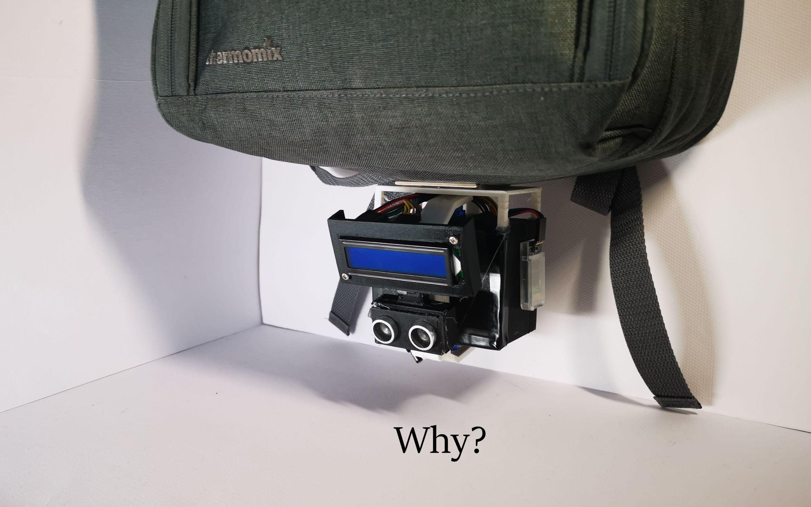
COVID-19 spreads mainly among people who are in close contact (within about 6 feet) for a very long period. Thus, today, social distancing has gradually become a new way of life globally as the threat of Covid-19 increases. But to the visually impaired, navigating a socially distanced world is a hard challenge. This means that they might have a high chance of exposing COVID-19. To solve this problem, I have come up with a prototype that will help create a socially distanced world for the visually impaired.
Some corporations have already created technology that helps reinforce social distancing. For example, the security company Avigilon uses their security cameras and developed their thermal camera and social distancing technology. These cameras can measure the distance between two people in a stationary view using image predicament.
As impressive as these existing devices already are, they have limitations. Avilgon’s thermal camera and social distancing technology can only be stationary and are fixed at a very specific angle, so this cannot specifically help a visually impaired person in the crowd of people. Also, the distance predicament technology is only using AI machine learning and does not use sensors such as a distance sensor.
In this project, CoroShield will be made to detach and attach to any surface (e.g backpacks, chest mount) thanks to the Neodymium rare earth magnets. In addition, it will accurately distinguish items and people and measure the distance between two people using an ultrasonic sensor.
.png)
.png)
.png)
.png)
.png)
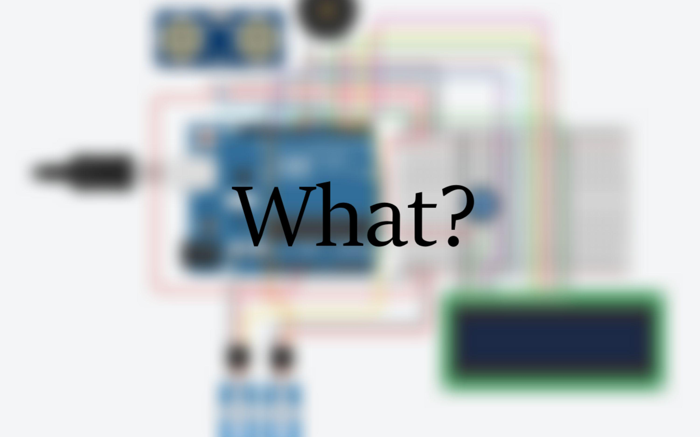
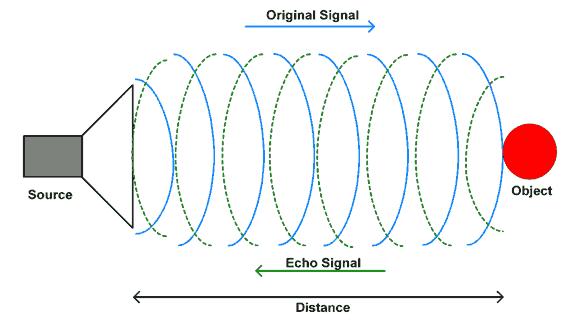
CoroShield, a self-made prototype project, is aimed to help the visually impaired to social distance. Using a combination of Arduino, machine learning, Solidworks 3D simulation, designing, and 3D printing, the device identifies whether a person or object comes within a 1.5m radius. It then notifies the person in front via LCD screen with warnings that increase in severity every 0.5m increments starting from 1.5 m and follows them using a swivel mechanism until they exit the radius. Its Neodymium magnets allow it to be attached to backpacks, chest straps, etc. for easy use among the visually impaired.
The results of this project differed slightly from the original plan. Although the ultrasonic sensor was designed to be very accurate when fewer than 2 meters, the numbers varied during testing. In the normal temperature environment (18 degrees), the distance in which the device displayed its first message was an average of 101 cm instead of the expected 150cm. As well, the second display message appeared at an average of 48 cm instead of 50cm. Both results were lower than the programmed value. As a person cannot stay still within a 1 to 2 cm range, the numbers cannot be accurate; however, it is close to the desired value.
In addition, the results demonstrated that the numbers fluctuated in different temperature environments. As the environment temperature increased, the distance of the warnings gradually decreased from 112cm to 91cm. After some research, it was found that the ultrasonic sensor works by sending a sound and listening for the echo when it bounces off an object; since the sound waves travel faster as the temperature increases, this means that the ultrasonic sensor responds differently in different environments. This also might be the main reason why the measured distance was different from the set distance.
Overall, If CoroShield was to be widely replicated and distributed as a product, it will be able to help the visually impaired social distancing more effectively.
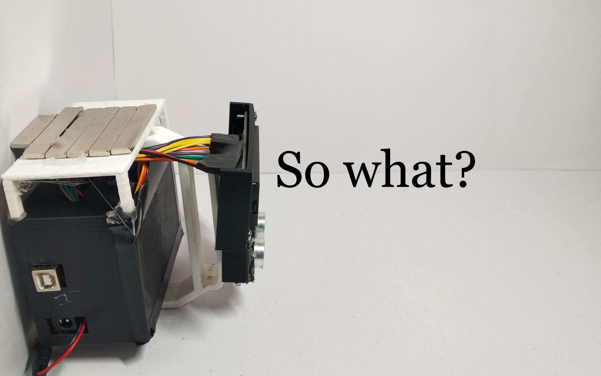
For the visually impaired, social distancing can be a challenge. CoroSheild aims to help the visually impaired to social distance by utilizing Arduino and AI technology. Through several trials, it was found that although the temperature affects the current prototype’s measurements, it can still detect the approximate distance between the user and the crowd to the maximum distance of 2m. It can also accurately swivel to the location of the human. To conclude, although the current version of “CoroShield” is reliable in human detection, it is not the best form it can be due to the design of the HC-SR04 ultrasonic sensor. But by swapping out the ultrasonic sensor for an even better version, the potential of Coroshield can be fully realized as a device that can help the visually impaired social distance.
In future studies, it is recommended to use a lidar sensor or time of flight sensor. These sensors offer extremely far and accurate distances due to their design. This can also be a solution to distance fluctuation in different temperatures, as the effect of temperature on the sensor will significantly decrease.
If applicable, an mp3 player can be used for the project. This will allow CoroShield to have two times more functions. It will be able to notify the user by reading out the object in front with object machine learning.
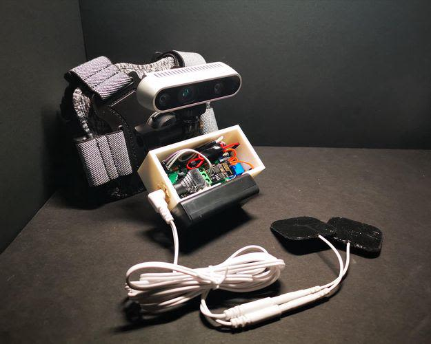
It's a futuristic concept - being able to fully control and steer a person out of the trajectory of incoming objects and hazards. Although this seems impossible, utilizing a non-evasive procedure named the Galvanic Vestibular Stimulation (GVS), it was done safely and with few side effects. Using a special stereo sensor and an object detection algorithm, incoming objects within a 3-meter range are recognized. A Python algorithm then determines the best trajectory to avoid the object by sending WIFI packets to the GVS device. The GVS device then receives the packets and steers the subject autonomously according to the packets received.
Through experimentation, it was found that the device could successfully detect, process, and transmit geospatial information to the GVS system, then steer the user into the correct trajectory to avoid any hazards obstructing the user’s path semi-autonomously.
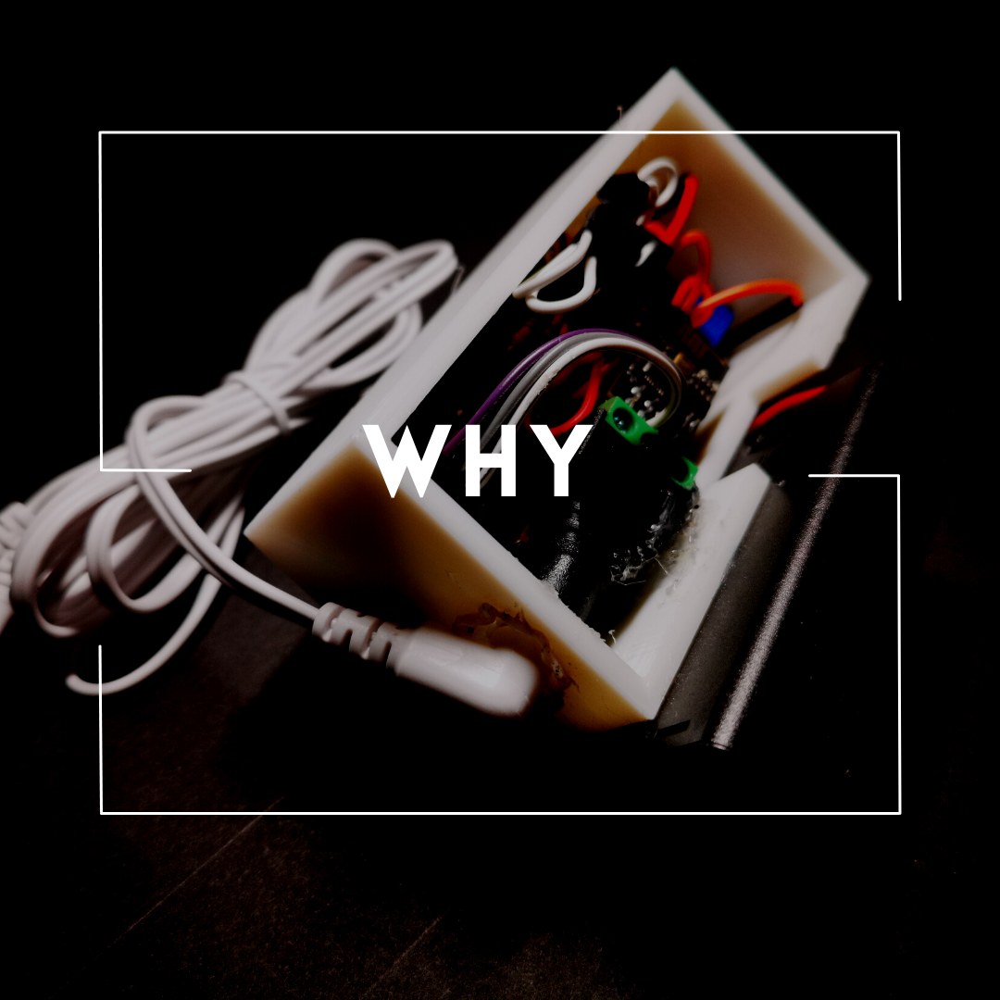
Today, an estimated 1.5 million Canadians (approximately 3.95% of Canada’s population) have trouble seeing even while wearing corrective lenses, and many use white canes, a device used to assist the visually impaired.
The traditional white cane can be easily thought of as the effective primary device that enables the visually impaired to stay mobile and independent. However, there are some important limitations to the white cane that can leave the user prone to injury. Incoming objects moving at high speeds are impossible to detect due to the cane design. Additionally, white canes are limited to short-range usage, which gives users little time to react to their surroundings and increases the risk of colliding with objects.
An important feature of an effective visual impairment aid device is the ability to react and transmit the information quickly and accurately to the user so that the person's ability to react and steer clear of the obstacle. Presently, there are many electronic devices available to aid the visually impaired. The UltraCane, introduced in 2010, is a white cane equipped with two ultrasound beams that can detect incoming obstacles and vibrate when an object comes within proximity. However, if multiple obstructions are presented in front of the user, UltraCane is only capable of vibrating to notify that there are incoming objects.
To target all these issues, the GVS device was developed. The purpose of this device is to create an innovative prototype that can provide semi-autonomous collision avoidance for the visually impaired.
The project consists of 3 major parts: The Galvanic Vestibular Stimulation Device, the Intel RealSense D435 Depth Camera, and the Object Detection and Avoidance Algorithm.
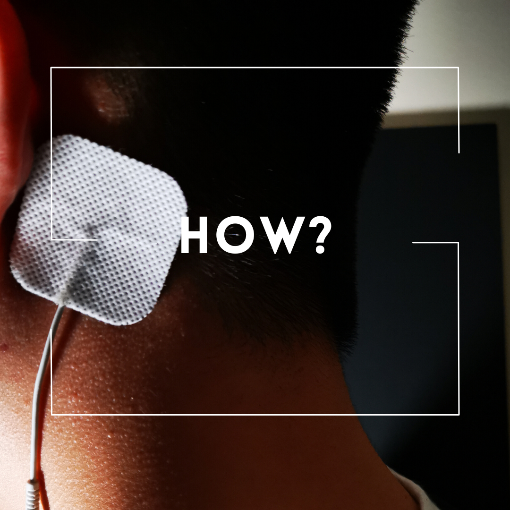
This project contained three major phases of experimentation.
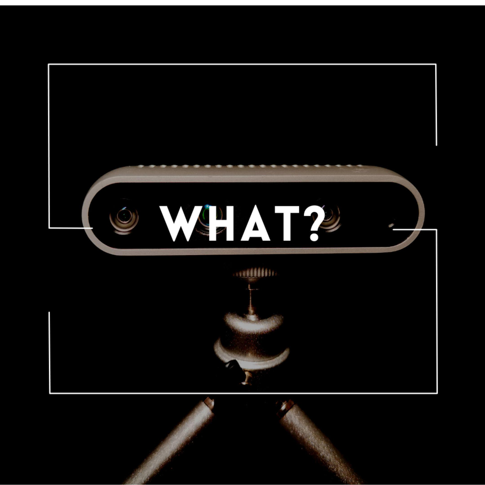
Phase 1: Experimenting with the GVS system
Part 1 of the experimentation consisted of finding the relationship between the voltage outputted and the head angular change. 10 trials, each with a duration of 5 seconds, were conducted. Utilizing a simple “for-loop” control flow statement, directions were sent from a computer to the GVS device through UDP packets.
Phase 2: Trialing with Intel RealSense D435 Depth Camera, YOLOv5 Detection Algorithm, and Collision Avoidance Prediction Pathing
Part 2 of the experiments consisted of determining the accuracy of the pathing decision algorithm. A total of 6 objects were utilized to conduct the experiment. Each object was assigned to one of 3 separate categories: large, medium, and small. The controlled environment consisted of a wall on the left side, which obstructed the user’s path. The objects were placed in the middle, leaving the only possible clear path to the right. The accuracy was calculated based on the number of successful decisions the algorithm made; in this case, it should have outputted “right”. Each object was trialled 10 times from 1 meter, 2 meters, and 3 meters away. In total, 180 trials were conducted. It was found that large and distinctly coloured objects were more easily identified, therefore increasing the accuracy rate of the algorithm.
Phase 3: Merging the GVS System with the Camera, Object Detection, and Algorithm
The final part of the project consisted of experimenting with the system when both devices were merged. In total 4 trials were conducted, each with a different scenario. The experiments took place in a large open space, measuring 230 cm in width and 345 cm in length. This space was cut into a grid of 4x6 units, each unit approximately 60 cm by 60 cm. Each trial was recorded using a smartphone and was analyzed and mapped out after the trials were finished. Prior to the scenario setups, the participant, Justin Peng, was blindfolded. This was to minimize bias in data collection. The adult supervisor afterwards created a randomized scenario and arranged the objects.

Based on the results of this study, it can be concluded that the GVS device can recognize common objects and safely steer the user out of a collision >60% of the time without the need for the user’s control within the ranges of 0 – 3 meters. These results support the hypothesis. The purpose was to develop a novel approach to a semi-autonomous collision avoidance device for the visually impaired and allow it to be used in most real-life situations where a white cane is proven to be hazardous and unusable. Overall, this project was proven to be successful and the results provide an alternative innovative solution to traditional visual impairment aid devices by utilizing GVS, object detection, custom printed circuit boards, Python algorithms and depth cameras.

Four-Pole GVS:
The current device developed in this project utilizes a two-pole GVS, which can only control the user’s left and right roll movement. If four-pole GVS were implemented, the device would be able to provide a fully autonomous control to a human’s walking motions.
Lidar & SLAM mapping:
Using LiDAR, geospatial data can be obtained and mapped out in 3D. This method is currently implemented in almost all fully autonomous driving cars. Utilizing this concept, together with four-pole GVS, a technology similar to that used in self-driving cars might be adapted for humans.
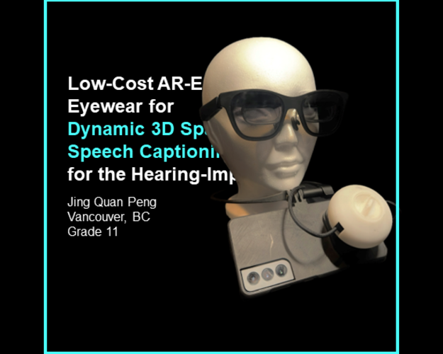
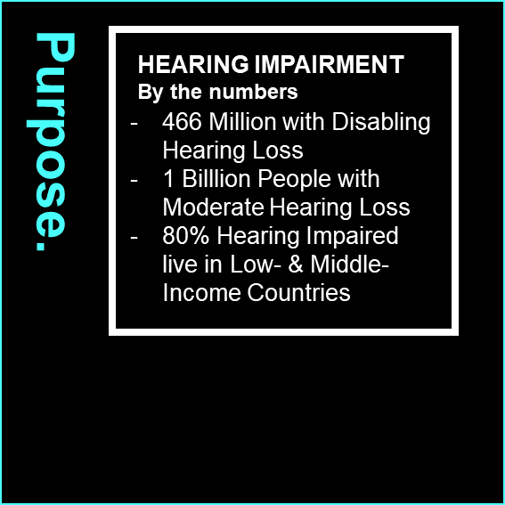
An estimated 1.57 billion people had hearing loss in 2019 [22], which serves as a testament to the significant global impact of this condition. This prevalence underscores the critical development of electronic telecommunication technologies (ETT), which can potentially enhance hearing-impaired individuals' lives, ideally increasing their independence and quality of life. ETTs’, such as real-time captions, have emerged as a critical tool for enhanced accessibility during various scenarios. These applications have encompassed a wide spectrum, for example, educational lecture videos [1], and group conversations [2]. However, despite continual developments in ETT, a singular device catering comprehensively to the hearing-impaired community's real-time communication needs remains elusive. Transcribe Glass [3], an augmentation device that affixes to a pair of glasses and synchronizes with a smartphone, utilizes low-resolution LCDs to present constrained captions. The necessitated manual adjustment concerning caption size, depth, and position of the captions decreases the attentional balance between the speaker and navigating the environment [4], rendering users vulnerable.
This research addresses the limitations of existing products, which require expensive commercially unavailable hardware; lack of automated spatial subtitle adjustment and speaker diarization; delay in real-time speech-to-text transcription; and challenges related to social acceptability. To address these challenges, this study utilizes consumer-grade head-worn display technology, validated by research to be acceptable by bystanders in social situations [10]; automatic speech recognition technology (ASR); alongside a novel low-resource visual speaker recognition algorithm; as well as a novel subtitle positioning method to replace the need of manually adjusting depth, size, and position of the captioning.
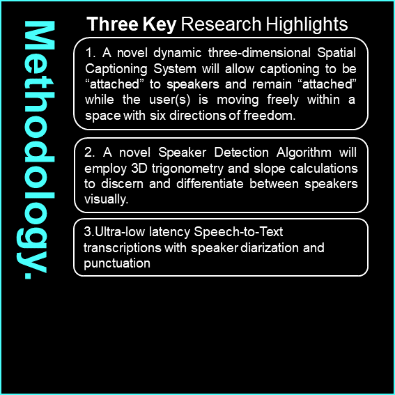
The purpose of this device is to create a low-cost, augmented reality-enabled platform that will leverage low-cost XREAL [11] glasses with the NRSDK development platform [12] and ARcore implementation [13] to provide dynamically adjusting 3D spatial speech captioning. It utilizes 6DOF body tracking and 3DOF head tracking derived from the XREAL glasses and smartphone’s IMU, and ARcore’s body tracking [14], to allow the system to precisely track and align captioning boxes in high resolution to each individual the user engages with during conversations, eliminating the need for manual adjustments for the user. Transcriptions will be delivered at ultra-low latency with the collaborative ability to translate from one language to another in real time.
The real-time captioning process begins by converting microphone contents into linear16 format[17], transmitting to the API, and receiving JSON messages for analysis. If the JSON content isn’t empty, the program parses data from its structure for word-per-word analysis. Speaker identification within the JSON [18] output is determined using a majority vote system, considering the speaker with the most words and the highest confidence percentage within the sentence.
Utilizing ARcore’s face tracking feature, as well as ARcore’s Raycasting feature, faces are automatically recognized, computed with depth, and optimally placed the subtitles below the person’s face. In combination with the directional awareness system, it discerns the user’s virtual coordinates versus in relation to the conversing speaker, effectively “attaching” the captioning box under the speaker. This dynamic tracking ensures that regardless of where the user’s or speaker’s movement is within the camera frame, FOV of 90 degrees, the system will consistently monitor and link the positions of the speaker and the user.
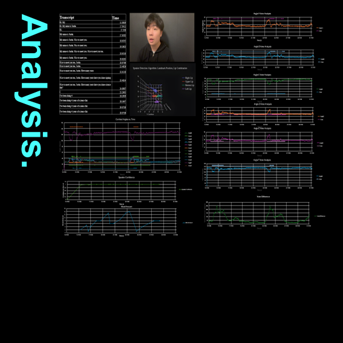
Research Highlight 3 (Continued): Speaker Recognition Algorithm
An OnCameraFrameReceived method is triggered upon receiving a new camera frame, where the code acquires the latest CPU image from the ARCameraManager, converts it to the RGBA32 format, and sends it to the calculator graph for processing.
The determineFinalSpeaker method within the calculator graph employs a voting mechanism to identify the dominant speaker among multiple faces. If a person accumulates enough votes, they are considered the speaker. Utilizing points indices 0, 14, 78, and 292, coordinates of the upper lip, lower lip, and left and right’s of a lip are extracted. Although more indices might seem advantageous, high numbers of indices may introduce noise and complexity, resulting in diminishing returns. These four coordinates are represented globally by: (x1, y1, z1), (x2, y2, z2), and (x3, y3, z3), (x4,y4,z4). The coordinates can then be connected to form a polygon. The polygon, as displayed above, is then bisected, forming 3 vertices of a triangle in 3D, which makes it possible to find the angles of the 6 vertices combined. The determination of six angles by establishing direction ratios, such as x2-x1, y2-y1, and z2-z1 for AB, and similar calculations for AC, BA, BC, CB, and CA is found.
This procedure can be applied to all six angles. The six angles are then stored in a list. Because iterations of the program run per every frame, while video runs at 30 frames per second, 1 frame would be 1/30th of a second. For every 16 frames of the program, data is taken from the list and analyzed. The results are taken to be analyzed within a two-layer threshold comparison involving individual indices fluctuation analysis and total angle difference analysis. After finding which speaker is currently speaking through the algorithm, the corresponding caption list will be updated and displayed in the user’s user interface.
Experiments were carried out under controlled laboratory conditions. The following data depicts the performance of the speaker detection algorithm during a 10-second conversation between the user and the speaker positioned in front of it. Each angle corresponds to one of the six indices. The "voter constants" signify instances where the algorithm successfully passed both the initial individual threshold layer and the subsequent total threshold layer analysis. Additionally, metrics such as Voter Difference, Speaker Duration, Total Word Number, Speaker Confidence, and real-time augmented reality transcription were assessed for accuracy and consistency. Moreover, the spatial positioning trials, assessing the algorithm's precision in tracking various movements, underscore its adaptability and potential real-world applicability.
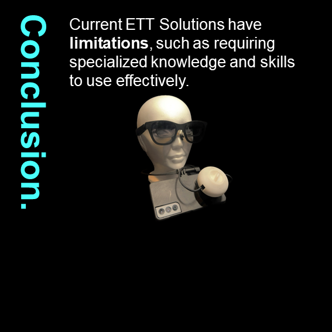
The execution of the Low-Cost Augmented Reality-Enabled Eyewear for Dynamic 3D Spatial Speech Captioning and Translation research project present a promising solution to the challenges faced by the hearing-impaired community in real-time communication. Leveraging consumer-grade head-worn display technology, automatic speech recognition technology, and a novel visual speaker recognition algorithm, the developed system surpasses existing limitations in electronic telecommunication technologies. The dynamic three-dimensional spatial captioning system, coupled with ultra-low latency speech-to-text transcriptions, offers an effective and affordable tool for hearing-impaired individuals, enhancing their accessibility and communication in diverse settings.
Moreover, the spatial positioning trials, assessing the algorithm's precision in tracking various movements, underscore its adaptability and potential real-world applicability. While recognizing potential sources of error, such as sensor noise and calibration inaccuracies, is crucial for further refinement, the developed system holds the promise of addressing critical needs in the hearing-impaired community. This research signifies a noteworthy advancement in the realm of communication technologies for the hearing-impaired, poised to significantly impact their daily lives by overcoming existing challenges and fostering greater independence and quality of communication.
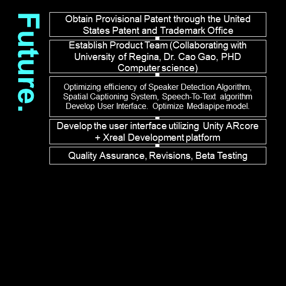
Firstly, I intend to secure a Provisional Patent through the United States Patent and Trademark Office to protect our innovations. Additionally, A product team will be established in collaboration with the University of Regina, led by Dr. Cao Gao, a Ph.D. holder in Computer Science. A primary focus will be on optimizing the efficiency of core components such as the Speaker Detection Algorithm, Spatial Captioning System, and Speech-To-Text algorithm. To ensure a seamless user experience, a user interface will be developed. Finally, the project will undergo rigorous Quality Assurance, Revisions, and Beta Testing phases to refine and validate.
A self-developed portable tracking module engineered to help visually impaired individuals maintain social distancing by combining machine learning human identification protocols with a strictly-timed Arduino hardware system.
Read More
An innovative prototype providing semi-autonomous collision avoidance for the visually impaired utilizing Galvanic Vestibular Stimulation (GVS) and Intel RealSense Depth cameras.
Read More
An augmented reality-enabled platform leveraging low-cost XREAL glasses to provide ultra-low latency dynamically adjusting 3D spatial speech captioning and translation.
Read More